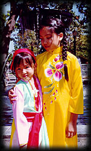
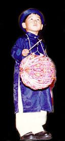

|
Mid-Autumn Festival, or Tet Trung Thu, marks the fifteenth day of the
eighth month of the lunar calendar. It is one of the most popular Vietnamese festivals and is
filled with colorful attractions in celebration of a community's spirit.
Young children from the ages of 4 years old and up participate in dance performances, contribute artwork, and play vital roles in making the Festival an exciting and memorable day. A strong cultural identity will enrich their understanding of their traditions and values. |
 |
 |
The Festival features workshops, innovative ideas, music, sports, arts and crafts, poetry, and various activities that unite children and adults. As the sounds of laughter and music fill the air, the children's lantern processions light up the surroundings. People are absorbed in conversations as they feast on the unique flavors of mid-autumn delicacies such as moon cake, lotus seed paste cake, and mung bean cake ( see pictures from last year's event ). |
| 12:00-12:15 | Welcome |
| 12:15-01:00 PM | "Lân" Dance |
| 12:00-07:00 PM | Art Exhibition |
| 12:00-04:00 PM | Drawing & Essay Contests |
| 02:30-04:30 PM | Children's Costume & Talent Contests |
| 02:30-06:30 PM |
Viet Arts Workshop:
|
| 03:30-05:00 PM | Multicultural Musical Program at the Main Stage:
|
| 04:30-6:00 PM | Martial Arts at the Martial Arts Yard:
|
| 05:30-07:00 PM | Vietnamese Musical Concert (1st half): Phuong Hoang Band, with local performers: Le Toan, Thai Hien, Nhut Yen, Phuong Thuy, Thanh Xuan, Giao Linh. |
| 07:00-07:30 PM | Ceremony & Acknowledgment |
| 07:30-07:50 PM | Wings of 100 Viets (Mid-Autumn Festival Committee proudly presents the Northern California traditional dance troupe). |
| 07:50-08:05 PM | Awards |
| 08:05-09:00 PM | Traditional Musical Program |
| 09:00-09:30 PM | Lantern Procession |
| 09:30-10:00 PM | Special Feature Entertainment Program (Santa Clara County high schools and middle schools) |
| 10:00-10:15 PM | Raffle Drawing:
|
| 10:20-Midnight | Phuong Hoang Band & local singers (2nd half) |
| Noon -Midnight | Booths: corporate sponsors, private sectors, raffle, games, lanterns, novelty items, food/drinks) Program is subject to change. |